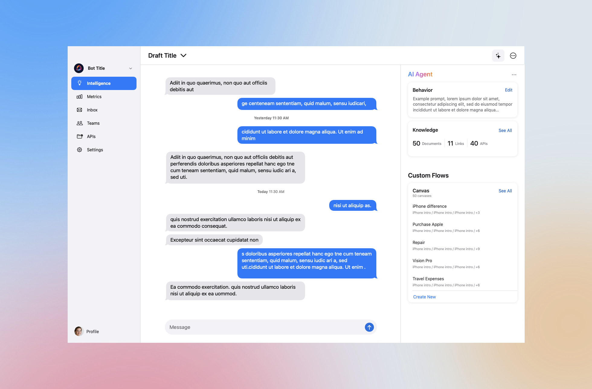

ChatKit

The existing chatbot platform was powerful—but the people who needed it most couldn’t use it on their own.
Non-technical teams—the ones closest to the customer problems the chatbots were meant to solve—would either avoid the tool entirely or pull in a developer to do it for them. The barrier wasn’t capability. It was the interface. Everything assumed a certain level of technical fluency that most users simply didn’t have.
The result was a bottleneck. Teams waited on engineers for tasks they should have been able to handle themselves. And even when they did get access, there was no real way to know if what they built would actually work—until it didn’t.
- Non-technical users had no clear entry point—most gave up or escalated before starting
- Conversation logic was exposed as raw structure, not guided behavior
- Knowledge management was disconnected from the builder, making it hard to trust AI responses
- No way to test and validate before going live—errors only surfaced in production
From builder to editor
The core shift wasn’t adding features—it was changing the mental model.
Users didn’t need to build a chatbot from scratch. They needed to shape one. ChatKit reframes the experience around editing, reviewing, and refining—not constructing from zero. AI generates a starting point; the user’s job is to make it theirs.
This shift from “builder” to “editor” lowered the activation energy dramatically. Instead of staring at an empty canvas and wondering where to begin, users arrive at something already in motion. The question changes from “how do I build this?” to “does this look right?”—a question anyone can answer.
Three decisions shaped the whole product.
Automation vs. control
The instinct was to automate as much as possible. But full automation would have made users feel like passengers in their own chatbot. The design question became: where does AI reduce friction, and where does it create anxiety? We landed on a model where AI handles the tedious—drafting responses, suggesting flows—but the user always makes the final call. Nothing goes live without explicit confirmation.
Guided onboarding as a first principle
Early designs dumped users into the builder and expected them to figure it out. That didn’t work. We moved setup to the front—before you can build anything, you define the bot’s purpose, tone, and scope. This felt like overhead at first, but it gave users a mental anchor. Every subsequent decision in the builder had context. “Does this fit what I said this bot was for?” was now a question users could actually ask themselves.
Knowledge as a first-class surface
AI responses are only as trustworthy as the knowledge behind them. Previous designs treated the knowledge base as a behind-the-scenes detail. We surfaced it. Users could see exactly what sources the bot was drawing from, add or remove content directly, and watch responses change as they did. This transparency was key to building confidence—not just in the tool, but in the chatbot itself.
ChatKit connects knowledge, logic, and AI-driven responses into a single system.
This hybrid model balances flexibility with structure, enabling predictable and scalable chatbot behavior.
Bot Setup
Before anything gets built, users define what the bot is for. A short guided setup asks about purpose, tone, and the audience it’ll serve. It feels like a brief rather than a form—and it gives every subsequent decision a foundation to stand on. For many users, this is the first time the problem has felt approachable.
Conversation Builder
The builder generates a draft conversation flow based on the setup brief. Users arrive at something that already works—and then shape it. They can adjust the flow, swap in structured responses where predictability matters, or let AI handle open-ended questions. The experience is closer to editing a document than writing one from scratch.
Testing & Knowledge
Users can simulate conversations before anything goes live—asking the bot questions, checking how it responds, and tracing answers back to their source in the knowledge hub. This loop between testing and editing is where trust gets built. Not trust in AI, but trust in the specific chatbot they just made.
The shift that mattered most wasn’t efficiency—it was confidence.
Users who used to say “I don’t know where to begin” were now saying “I can try this and refine it.” That change in posture—from avoidance to agency—was the real outcome of the design.
Non-technical users could attempt, iterate, and ship chatbots without engineering support—many for the first time
Setup time dropped significantly; teams that previously waited on developers could move independently
Integrated testing and transparent knowledge sourcing gave users a way to verify behavior before it reached customers
The best outcome wasn’t that the tool was easier. It was that people stopped assuming they couldn’t do it.